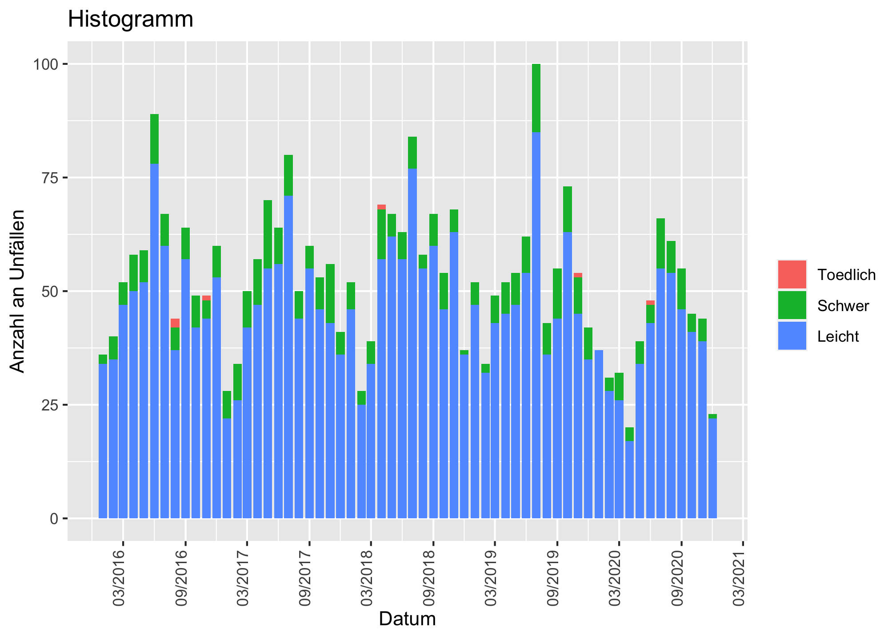
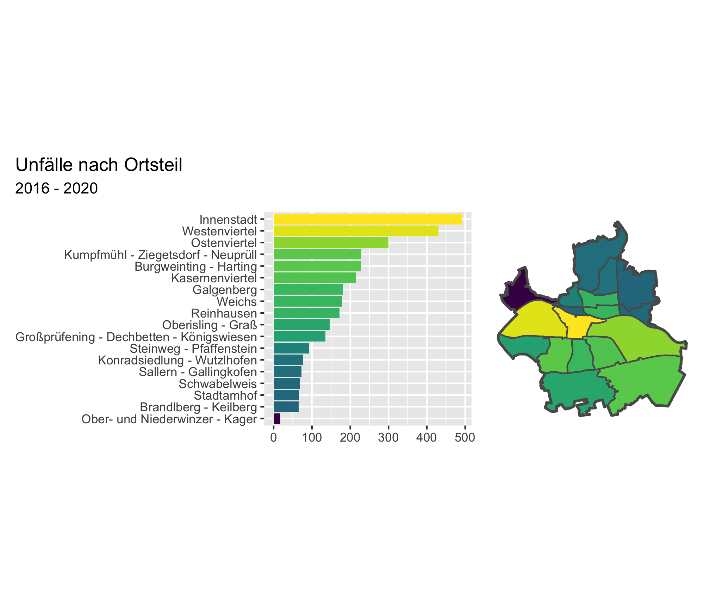

4 Anzahl der Unfälle
data |>
mutate(
month_year = parse_date(
x = glue::glue("{month}/{year}"),
format = "%m/%Y"
)
) |>
group_by(month_year, severity) %>%
tally() %>%
ggplot(aes(x = month_year, y = n)) +
geom_col(
aes(fill = severity)
) +
scale_x_date(
date_breaks = "6 months",
date_labels = "%m/%Y"
) +
labs(
x = "Datum",
y = "Anzahl an Unfällen",
title = "Histogramm",
fill = ""
) +
theme(axis.text.x = element_text(angle = 90, vjust = 0.1))
4.1 Unfälle nach Monat
data.barplot <-
data |>
mutate(
month = as_factor(month) |>
fct_recode(
"Januar" = "1",
"Februar" = "2",
"März" = "3",
"April" = "4",
"Mai" = "5",
"Juni" = "6",
"Juli" = "7",
"August" = "8",
"September" = "9",
"Oktober" = "10",
"November" = "11",
"Dezember" = "12"
),
severity = fct_infreq(severity) |> fct_rev(),
light_condition = fct_infreq(light_condition) |> fct_rev(),
street_condition = fct_infreq(street_condition) |> fct_rev()
)
plot.bar.month_1 <-
data.barplot |>
count(month, severity) |>
ggplot(aes(x = month, y = n)) +
geom_col(
aes(fill = severity)
) +
labs(
x = "Datum",
y = "Anzahl an Unfällen",
fill = ""
) +
theme(
legend.position = "top"
)
plot.bar.month_2 <-
data.barplot |>
count(month, light_condition) |>
ggplot(aes(x = month, y = n)) +
geom_col(
aes(fill = light_condition)
) +
labs(
x = "Datum",
y = "Anzahl an Unfällen",
fill = ""
) +
theme(
legend.position = "bottom"
)
plot.bar.month_3 <-
data.barplot |>
count(month, street_condition) |>
ggplot(aes(x = month, y = n)) +
geom_col(
aes(fill = street_condition)
) +
labs(
x = "Datum",
y = "Anzahl an Unfällen",
fill = ""
) +
theme(
legend.position = "bottom"
)
plot.bar.month_1 / (plot.bar.month_2 | plot.bar.month_3) + plot_annotation(tag_levels = "A")
4.2 Unfälle nach Uhrzeit
plot.bar.time_1 <-
data.barplot |>
count(hour, severity) |>
ggplot(aes(x = hour, y = n)) +
geom_col(
aes(fill = severity)
) +
labs(
x = "Datum",
y = "Anzahl an Unfällen",
fill = ""
) +
theme(
legend.position = "top"
)
plot.bar.time_2 <-
data.barplot |>
count(hour, light_condition) |>
ggplot(aes(x = hour, y = n)) +
geom_col(
aes(fill = light_condition)
) +
labs(
x = "Datum",
y = "Anzahl an Unfällen",
fill = ""
) +
theme(
legend.position = "bottom"
)
plot.bar.time_3 <-
data.barplot |>
count(hour, street_condition) |>
ggplot(aes(x = hour, y = n)) +
geom_col(
aes(fill = street_condition)
) +
labs(
x = "Datum",
y = "Anzahl an Unfällen",
fill = ""
) +
theme(
legend.position = "bottom"
)
plot.bar.time_1 / (plot.bar.time_2 | plot.bar.time_3) + plot_annotation(tag_levels = "A")
4.3 Unfälle nach Ortsteil
sf.data <-
data |>
st_as_sf(coords = c("lng", "lat"), crs = "WGS84") |>
rename(
points = geometry
) |>
st_join(
y = sf.districts |> rename("district_shape" = geometry),
join = st_within,
left = TRUE
) |>
select(-m2)
data.district_plot <-
sf.data |>
as_tibble() |>
left_join(
y = sf.districts |> rename("district_polygon" = geometry) ,
by = "district"
) |>
drop_na(district) |>
add_count(district) |>
mutate(
district = as_factor(district) |>
fct_infreq() |>
fct_rev()
)
plot.district_bar <-
data.district_plot |>
ggplot(aes(x = district)) +
geom_bar(
aes(fill = n)
) +
coord_flip() +
theme(
axis.title = element_blank()
)
plot.district_map <-
data.district_plot |>
ggplot() +
geom_sf(aes(geometry = district_polygon, fill = n), lwd = 0) +
geom_sf(data = sf.districts, alpha = 0) +
geom_sf(data = sf.regensburg, alpha = 0, lwd = 0.9, linetype = 1) +
ggthemes::theme_map()
(plot.district_bar | plot.district_map) &
viridis::scale_fill_viridis(
option = "D",
direction = 1,
tran = "log"
) &
theme(
legend.position = "none"
) &
plot_annotation(
title = glue::glue("Unfälle nach Ortsteil"),
subtitle = glue::glue("{min(data$year)} - {max(data$year)}")
)